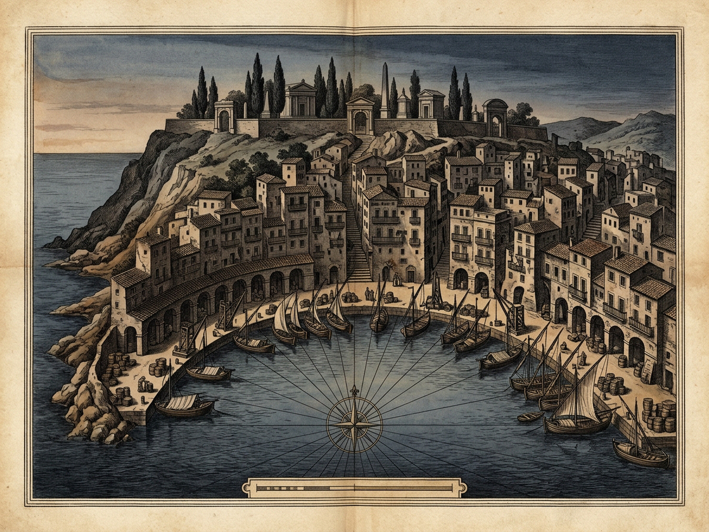
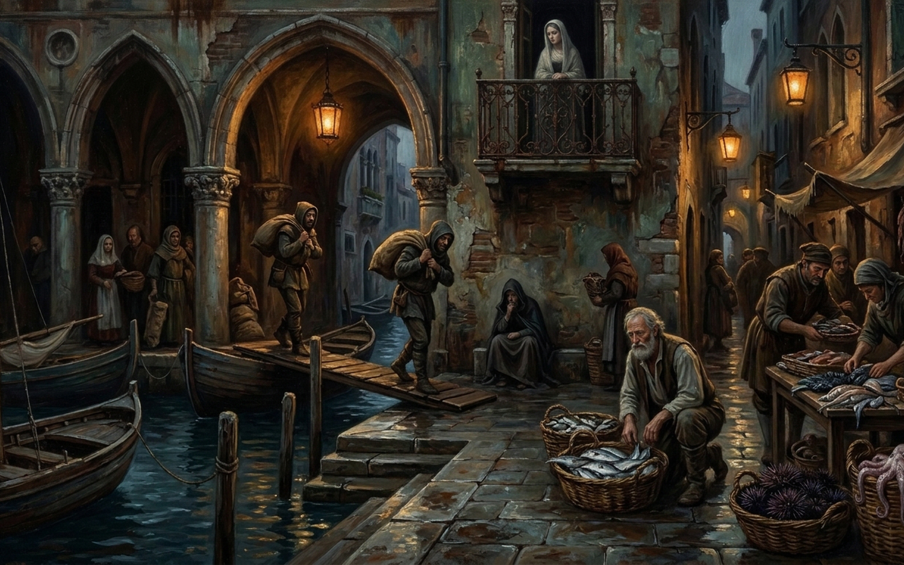

ADELMA
Dusk Wholesale Fish-Market Wharf · Fixed Eyes in Twilight
Living 23
Dead 37
Masks 8/12
[F] Forehead
[M] Sound
[P] Plates
[R] Reset
FOREHEAD DOUBT · [F] TOUCH TEMPLE
Perhaps this is the land where you arrive when you die...
[1] Dock Apron Mooring Bollard
Eyes Watching · [G] Lock · [A] Avert
DEAD OUTNUMBER LIVING · 62%
[K] Kaleidoscope · 0
50%
Living: 23
50% Threshold Crossed
Dead: 37 · Masked 8/12
1 · Sailor
2 · Fisherman
3 · Sufferer
4 · Stevedore
5 · Maiden
6 · Vendor
[1] Dock Apron Mooring Bollard
Sailor catching the wet mooring hawser among dock porters at dusk landing
Gaze Paralysis
0%
[G] Hold Gaze
[A] Avert Eyes
MASK YOU PROJECT ONTO THEM
Soldier Resembling My Dying Father
Father on the eve of death
Catching the wet mooring hawser at dusk landing, the sailor turns the hollowed brow of a soldier resembling my father the day before he died.
⇄ RECIPROCAL STARING MIRROR ⇄
DEAD LIKENESS THEY MOURN IN YOU
Youngest Son Swept Overboard
Lost youngest son
His wet grip freezes on the hawser: in your salt-stung eyes he recognizes his youngest son swept overboard in the winter gale off Negroponte.
ADELMA · ROYAL SURVEY & DUSK PLATES
Diptych
Map
Plate
[Z] 1.8× Loupe
[Esc] Close

Harbor Map · Dusk Wharf, Colonnade & Necropolis Steps (1600×1200)

Dusk Landing Plate · Wholesale Fish-Market Dock (1600×1000)